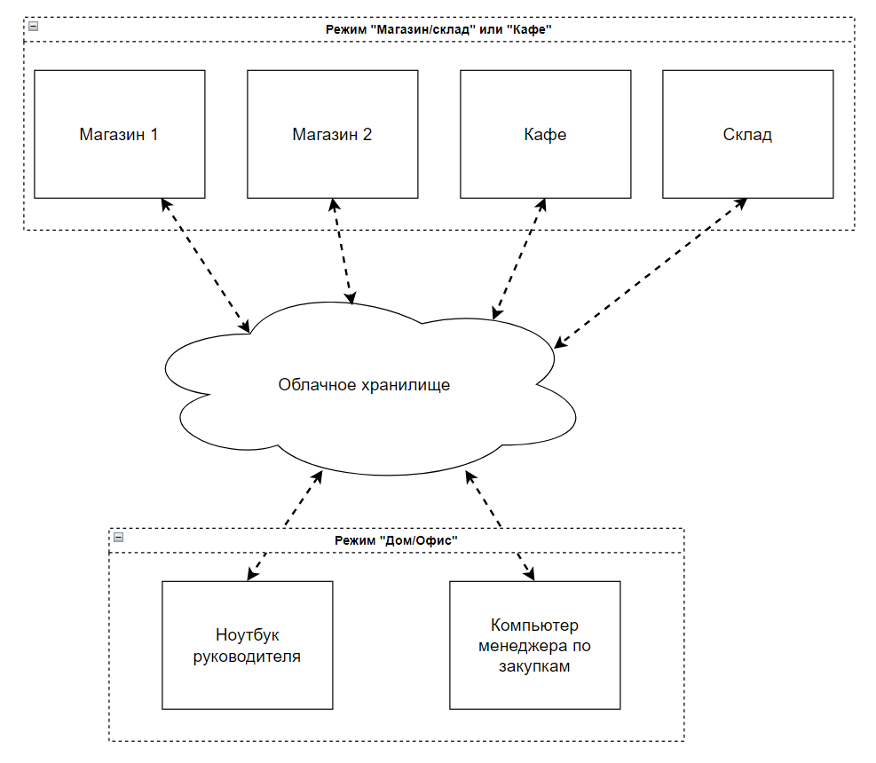
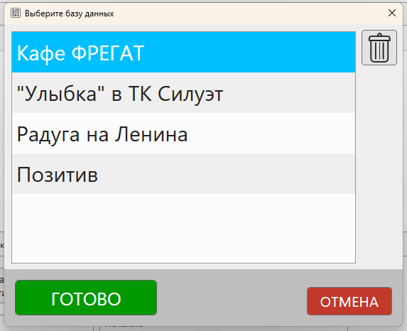

В кассовой программе GBS.Market есть несколько режимов работы, один из которых – "Дом/офис".
"Дом/офис" – это режим, который позволяет контролировать неограниченное количество торговых точек. Так называемый "бэк-офис".
Полезные материалы
Возможности в режиме "дом/офис"
В данном режиме доступен просмотр практически всей информации из базы данных торговой точки. Т.е. вы сможете увидеть все, будто бы запустили программу в самой торговой точке. Это позволяет контролировать работу сотрудников и анализировать работу магазина или кафе.
Кроме просмотра режим "дом/офис" позволяет вносить изменения в базу данных торговой точки, но с рядом ограничений. Например, доступны следующие операции:
- Создание, изменение и удаление товаров
- Создание, изменение и удаление категорий товаров
- Создание, изменение и удаление накладных
- и т.п.
Ряд возможностей по редактированию или изменению данных сейчас недоступен.
Полезные материалы
Схема работы программы в режиме "дом/офис"
На схеме ниже показано, как может быть организован удаленный контроль торговых точек при использовании режима "дом/офис".
На данной схеме показано, что в синхронизации участвует всего 6 компьютеров: 4 торговых точки и 2 ПК в режиме "дом/офис". Количество торговых точек, которые можно контролировать через "дом/офис" – не ограничено.
Каждый из компьютеров может контролировать все подключенные торговые точки. При необходимости, можно настроить права доступа для пользователя, использующего программу в режиме "дом/офис". Например, чтобы менеджер по закупкам мог видеть только остатки товаров, но не видеть прибыль или вносить какие-либо изменения.
Полезные материалы
Внешний вид режима "дом/офис"
При запуске программы в режиме "дом/офис" будет предложено выбрать одну из подключенных баз данных.
Далее откроется окно продаж, из которого уже можно будет получить доступ к необходимым разделам, таким как:
- сводной отчет
- журнал продаж
- каталог товаров
- и т.д.
Настройка обмена данными
Для начала работы в режиме "дом/офис" необходимо сделать следующее:
- установить "облако", например, Яндекс.Диск
- в торговой точке настроить выгрузку данных в "облако"
После того как файлы баз данных появятся в "облаке", можно приступить к настройке программы в режиме "дом/офис".
Для этого:
- при установке программы выберите режим "дом/офис"
- в Файл – Настройки – Удаленный контроль укажите путь к папке в "облаке", в которую происходит выгрузка данных из торговых точек
Если все сделано верно, то при перезапуске программы вы увидите список доступных торговых точек.
Важно
Обратите внимание, что для внесения изменения в базу данных торговой точки в самой торговой точке должна быть включена опция "принимать изменения из дом/офис"
Примечания
Использование программы в режиме "дом/офис" регулируется общими правилами лицензирования (договор-оферта) – т.е. одна лицензия на одну копию программы. Для того чтобы использовать программу в данном режиме, необходимо приобрести лицензию на компьютер, где установлена программа. Лицензия, приобретенная для торговой точки, НЕ распространяется на режим "дом/офис".
Например:
если 4 торговых точки и 1 "дом/офис" – нужно 5 лицензий
если 5 торговых точек и 2 "дом/офис" – нужно 7 лицензий